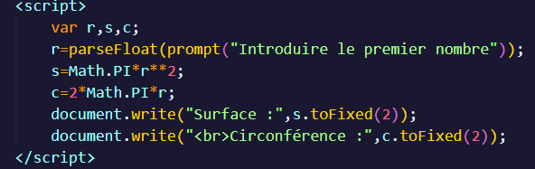

C'est quoi un cercle ?
Introduction
Un cercle est une forme géométrique plane qui consiste en tous les points dans un plan qui sont à une distance fixe, appelée rayon, d'un point fixe donné, appelé le centre. En d'autres termes, c'est l'ensemble de tous les points équidistants* d'un point central.
*équidistants veut dire les points à même distance par apport aux centre.
Le rayon :
Le calcul du rayon d'un cercle est simple. Le rayon est la distance entre le centre du cercle et n'importe quel point sur le cercle. Si vous connaissez les coordonnées du centre du cercle et celles d'un point sur le cercle, vous pouvez utiliser la distance entre deux points dans un système de coordonnées pour calculer le rayon.
La circonférence :
La circonférence d'un cercle est la longueur de son bord externe. En Mathématique on emploira 2*π*r pour déterminer la circonférence d'un cercle.
La surface :
La surface d'un cercle est la zone plane située à l'intérieur de sa circonférence. On utilise la formule pi*r^2 pour la calculer.
Projet Cercle
Mise en situation :
On demande de déterminer la surface et la circonférence d'un cercle grâce aux rayon qu'on encodera.
Avant on réalise l'ordinogramme/le pseudo code :
- Lire et écrire le rayon grâce à une requête
- Structure conditionnel si pour vérifier si le rayon est >=0 si oui calculer sinon message pour signaler la condition
- Calculer la surface
- Surface = PI*Rayon^2
- Calculer la circonférence
- Circonférence = 2*PI*Rayon
^ -> exposant
PI = π
L'ordinogramme (Ordi)

Le pseudo Code (Lda)

Les scripts en JS :
version sans formulaire se reposant avec un prompt :
version avec un formulaire sans utilisé de prompt :

Les scripts en PHP :
Version avec formulaire :


2e version :
Version JS avec une condition rayon inférieur à 0 et alerte

Version PHP avec une condition rayon inférieur à 0 et alerte